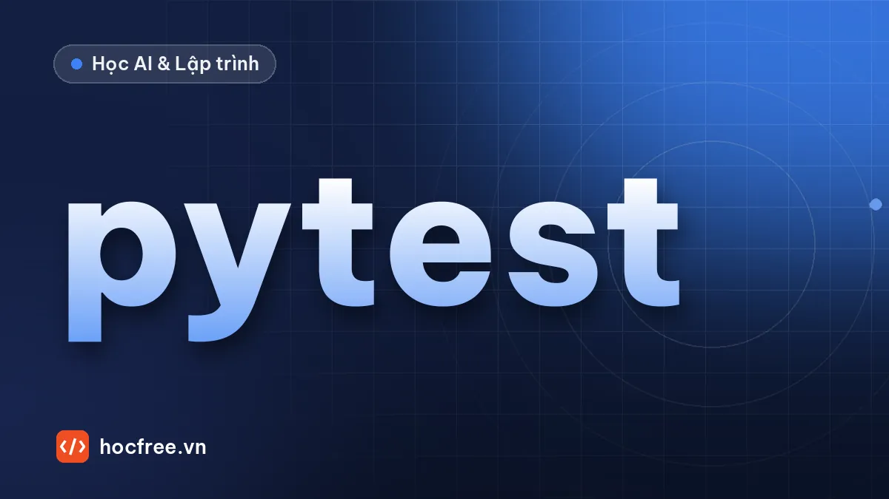

Kiểm thử hàm xử lý ảnh với pytest: bắt lỗi trước khi lên máy
Khóa chặt hàm xử lý ảnh bằng pytest: fixture, parametrize, approx, ảnh tổng hợp có đáp án và bộ ảnh hồi quy bắt lỗi escape trước khi lên máy trạm.

Học xong bài này, bạn sẽ
- Viết test với fixture, parametrize, pytest.approx
- Test hàm OpenCV bằng ảnh tổng hợp có đáp án
- Lập bộ ảnh hồi quy để sửa code không làm hỏng kết quả
Nên học trước: Tổ chức pipeline xử lý bằng hàm và cấu hình
Nội dung bài viết
Bạn vừa sửa một ngưỡng trong hàm đánh giá OK/NG, chạy thử vài ảnh thấy ổn, đẩy lên máy trạm. Hai ngày sau, ca đêm báo máy loại nhầm hàng loạt sản phẩm đúng ở mức ranh giới. Lỗi này hoàn toàn có thể bắt được trong vài giây nếu có kiểm thử tự động. Bài này hướng dẫn dùng pytest, công cụ kiểm thử phổ biến nhất của Python, để bảo vệ các hàm xử lý ảnh của bạn.
Vì sao kỹ sư Vision cần viết test?
- Code thay đổi liên tục: đổi ngưỡng, thêm điều kiện, tối ưu tốc độ. Mỗi lần sửa đều có thể làm hỏng thứ đang chạy đúng.
- Lỗi ở ranh giới rất khó thấy bằng mắt:
<hay<=, ROI sát biên ảnh, ảnh màu thay vì ảnh xám. - Test là tài liệu sống: đọc test là biết hàm được dùng thế nào và kỳ vọng ra sao.
Mục tiêu không phải viết thật nhiều test, mà là khóa chặt những hành vi quan trọng: kích thước đầu ra, cách xử lý dữ liệu sai, và các giá trị ngưỡng.
Cài đặt
pip install pytest numpyQuy ước của pytest rất đơn giản: file tên bắt đầu bằng test_, hàm test tên bắt đầu bằng test_, bên trong dùng câu lệnh assert bình thường của Python. Không cần kế thừa lớp nào.
Code cần kiểm thử
Tạo file xu_ly.py chứa ba hàm nhỏ thường gặp trong một trạm kiểm tra: cắt ROI, tính tỉ lệ pixel tối (vết bẩn, vết cháy) và đánh giá OK/NG.
import numpy as np
def cat_roi(anh, roi):
"""Cắt ROI (x, y, w, h); báo lỗi nếu ROI nằm ngoài ảnh."""
x, y, w, h = roi
cao, rong = anh.shape[:2]
x1, y1 = max(0, x), max(0, y)
x2, y2 = min(rong, x + w), min(cao, y + h)
if x1 >= x2 or y1 >= y2:
raise ValueError(f"ROI {roi} nằm ngoài ảnh {rong}x{cao}")
return anh[y1:y2, x1:x2]
def ti_le_pixel_toi(anh_xam, nguong=50):
"""Tỉ lệ (0..1) số pixel tối hơn ngưỡng."""
if anh_xam.ndim != 2:
raise ValueError("Cần ảnh xám 2 chiều")
return float(np.count_nonzero(anh_xam < nguong)) / anh_xam.size
def danh_gia(ti_le_toi, gioi_han=0.02):
"""OK nếu vết tối chiếm không quá giới hạn."""
return "OK" if ti_le_toi <= gioi_han else "NG"Hàm cat_roi giống bài cắt ROI, resize, xoay, lật. Ở đây ta không cần OpenCV: ảnh chỉ là mảng NumPy (xem ảnh là mảng số), nên có thể tự tạo ảnh thử trong test mà không cần file ảnh thật.
Viết test đầu tiên
Tạo file test_xu_ly.py cùng thư mục:
import numpy as np
import pytest
from xu_ly import cat_roi, danh_gia, ti_le_pixel_toi
@pytest.fixture
def anh_trang():
"""Ảnh xám 100x200 toàn màu sáng (200)."""
return np.full((100, 200), 200, np.uint8)
def test_cat_roi_dung_kich_thuoc(anh_trang):
vung = cat_roi(anh_trang, (10, 20, 50, 30))
assert vung.shape == (30, 50) # (cao, rộng)
def test_cat_roi_bi_cat_o_bien(anh_trang):
vung = cat_roi(anh_trang, (180, 90, 50, 50))
assert vung.shape == (10, 20)
def test_cat_roi_ngoai_anh_bao_loi(anh_trang):
with pytest.raises(ValueError, match="nằm ngoài ảnh"):
cat_roi(anh_trang, (500, 500, 10, 10))
def test_anh_sach_khong_co_pixel_toi(anh_trang):
assert ti_le_pixel_toi(anh_trang) == 0.0
def test_vet_toi_100_pixel(anh_trang):
anh_trang[0:10, 0:10] = 0 # vết tối 10x10 = 100 pixel
assert ti_le_pixel_toi(anh_trang) == pytest.approx(100 / 20000)
def test_anh_mau_bi_tu_choi():
anh_mau = np.zeros((10, 10, 3), np.uint8)
with pytest.raises(ValueError):
ti_le_pixel_toi(anh_mau)
@pytest.mark.parametrize(
"ti_le, ket_qua",
[(0.0, "OK"), (0.02, "OK"), (0.0201, "NG"), (0.5, "NG")],
)
def test_danh_gia_theo_nguong(ti_le, ket_qua):
assert danh_gia(ti_le) == ket_quaBa công cụ quan trọng nhất của pytest đều có mặt ở đây:
| Công cụ | Tác dụng | Trong ví dụ |
|---|---|---|
@pytest.fixture | Tạo dữ liệu dùng chung; mỗi test nhận một bản mới | anh_trang |
pytest.raises | Khẳng định hàm phải báo lỗi (có thể kiểm tra cả nội dung thông báo) | ROI ngoài ảnh, ảnh màu |
@pytest.mark.parametrize | Chạy một test với nhiều bộ dữ liệu | 4 mức tỉ lệ quanh ngưỡng |
pytest.approx | So sánh số thực có sai số làm tròn | Tỉ lệ 0,005 |
test_vet_toi_100_pixel vẽ vết đen lên anh_trang. Vì fixture được gọi lại cho mỗi test, các test khác vẫn nhận ảnh sạch. Nếu bạn dùng một biến toàn cục thay cho fixture, thứ tự chạy test sẽ ảnh hưởng kết quả, một loại lỗi rất khó tìm.Chạy test
pytest -vtest_xu_ly.py::test_cat_roi_dung_kich_thuoc PASSED [ 10%]
test_xu_ly.py::test_cat_roi_bi_cat_o_bien PASSED [ 20%]
test_xu_ly.py::test_cat_roi_ngoai_anh_bao_loi PASSED [ 30%]
test_xu_ly.py::test_anh_sach_khong_co_pixel_toi PASSED [ 40%]
test_xu_ly.py::test_vet_toi_100_pixel PASSED [ 50%]
test_xu_ly.py::test_anh_mau_bi_tu_choi PASSED [ 60%]
test_xu_ly.py::test_danh_gia_theo_nguong[0.0-OK] PASSED [ 70%]
test_xu_ly.py::test_danh_gia_theo_nguong[0.02-OK] PASSED [ 80%]
test_xu_ly.py::test_danh_gia_theo_nguong[0.0201-NG] PASSED [ 90%]
test_xu_ly.py::test_danh_gia_theo_nguong[0.5-NG] PASSED [100%]
============================== 10 passed in 0.05s ==============================7 hàm test nhưng có 10 kết quả, vì test dùng parametrize được tách thành 4 lần chạy, mỗi lần có tên riêng như [0.02-OK]. Thời gian chạy trên máy bạn sẽ khác một chút.
Khi test bắt được lỗi
Giả sử một đồng nghiệp "tối ưu" hàm đánh giá và vô tình đổi <= thành <:
def danh_gia(ti_le_toi, gioi_han=0.02):
return "OK" if ti_le_toi < gioi_han else "NG" # lỗi: đổi <= thành <Chạy pytest -q, kết quả (rút gọn phần cuối):
def test_danh_gia_theo_nguong(ti_le, ket_qua):
> assert danh_gia(ti_le) == ket_qua
E AssertionError: assert 'NG' == 'OK'
E
E - OK
E + NG
test_xu_ly.py:48: AssertionError
=========================== short test summary info ============================
FAILED test_xu_ly.py::test_danh_gia_theo_nguong[0.02-OK] - AssertionError: as...
1 failed, 9 passed in 0.07spytest chỉ rõ: đúng ở mức 0,02, hàm trả về NG trong khi quy định là OK. Đây chính là lỗi "loại nhầm hàng ở ranh giới" ở đầu bài, bị chặn trước khi lên máy trạm.
Các lệnh hay dùng
| Lệnh | Ý nghĩa |
|---|---|
pytest -q | Kết quả gọn |
pytest -v | Liệt kê từng test |
pytest -k roi | Chỉ chạy test có chữ "roi" trong tên |
pytest -x | Dừng ngay ở test lỗi đầu tiên |
pytest --lf | Chỉ chạy lại các test lỗi ở lần trước |
Nên test gì trong code xử lý ảnh?
- Hình dạng và kiểu dữ liệu đầu ra:
shape,dtype. Rất nhiều lỗi đến từ nhầm (cao, rộng) với (rộng, cao). - Ảnh tổng hợp có đáp án biết trước: vẽ một hình tròn đặc bán kính 20 rồi kiểm tra số pixel trắng xấp xỉ π·20² ≈ 1257. Lưu ý
cv2.contourAreađo theo đường viền nên cho số nhỏ hơn (khoảng 1200), vì vậy hãy ghi rõ test đo theo cách nào. Không cần ảnh thật. - Đầu vào sai: ảnh rỗng, ảnh màu khi cần ảnh xám, ROI ngoài biên. Hàm nên báo lỗi rõ ràng thay vì trả kết quả vô nghĩa.
- Giá trị ngưỡng: đúng tại ngưỡng, ngay trên và ngay dưới ngưỡng.
- Ảnh hồi quy (regression): giữ vài ảnh thật từng gây lỗi trong thư mục
tests/data/kèm kết quả mong đợi. Mỗi lần sửa thuật toán, chạy lại để chắc không "sửa chỗ này hỏng chỗ kia" (làm cụ thể ở mục test hồi quy bên dưới).
pytest.approx(gia_tri, abs=0.01) hoặc rel=1e-3 tùy độ chính xác bạn cần.Test hàm OpenCV bằng ảnh tổng hợp có đáp án
Các hàm ở trên chỉ đếm pixel. Hàm đo thật trong trạm phức tạp hơn: phân ngưỡng Otsu, tìm vùng, đổi diện tích ra đường kính. Muốn test nó, ta cần ảnh mà đáp án đã biết chính xác. Thêm vào xu_ly.py hai hàm: do_duong_kinh đo đường kính (px) của vật tối lớn nhất, và luu_anh_ng lưu ảnh NG vào thư mục theo ngày.
import math
from pathlib import Path
import cv2
def do_duong_kinh(anh_xam):
"""Đường kính (px) của vật tối lớn nhất trên nền sáng, suy từ diện tích (đường kính tròn tương đương)."""
if anh_xam.ndim != 2:
raise ValueError("Cần ảnh xám 2 chiều")
_, nhi_phan = cv2.threshold(anh_xam, 0, 255, cv2.THRESH_BINARY_INV + cv2.THRESH_OTSU)
n, _, stats, _ = cv2.connectedComponentsWithStats(nhi_phan)
if n < 2:
raise ValueError("Không tìm thấy vật")
dien_tich = stats[1:, cv2.CC_STAT_AREA].max()
return 2 * math.sqrt(dien_tich / math.pi)
def luu_anh_ng(anh, thu_muc, ma_sp):
"""Lưu ảnh NG thành <thu_muc>/NG_<ma_sp>.png, tạo thư mục nếu chưa có; trả về đường dẫn."""
thu_muc = Path(thu_muc)
thu_muc.mkdir(parents=True, exist_ok=True)
duong_dan = thu_muc / f"NG_{ma_sp}.png"
if not cv2.imwrite(str(duong_dan), anh):
raise OSError(f"Không ghi được {duong_dan}")
return duong_danNhiều file test cần cùng một kiểu ảnh thử, nên ta đặt fixture vào tests/conftest.py: pytest tự nạp file này cho mọi test trong thư mục, không cần import. Fixture ở đây là một "nhà máy": nó trả về một hàm để mỗi test tự vẽ đĩa với bán kính, độ sáng, độ nhiễu mình cần. Biên đĩa được vẽ chính xác dưới pixel (mỗi pixel biên nhận tỉ lệ diện tích nằm trong đĩa), giống cách các bài chặng Calibration tạo ảnh thử, nên đường kính thật đúng bằng 2r.
# tests/conftest.py
import numpy as np
import pytest
@pytest.fixture
def ve_dia_tron():
"""Fixture 'nhà máy': trả về một hàm vẽ đĩa tối bán kính r (px, số thực) trên nền sáng, biên chính xác dưới pixel."""
def _ve(r, cao=200, rong=200, nen=200, vat=40, nhieu=0.0, hat=0):
yy, xx = np.mgrid[0:cao, 0:rong]
phu = np.clip(r + 0.5 - np.hypot(xx - rong / 2, yy - cao / 2), 0, 1) # tỉ lệ diện tích pixel nằm trong đĩa
anh = nen - (nen - vat) * phu
if nhieu:
anh = anh + np.random.default_rng(hat).normal(0, nhieu, anh.shape)
return np.clip(np.round(anh), 0, 255).astype(np.uint8)
return _ve# tests/test_do_luong.py
import cv2
import numpy as np
import pytest
from xu_ly import do_duong_kinh, luu_anh_ng
@pytest.mark.parametrize("r", [10.0, 20.5, 35.25])
def test_duong_kinh_dung_trong_0_3_px(ve_dia_tron, r):
assert do_duong_kinh(ve_dia_tron(r)) == pytest.approx(2 * r, abs=0.3)
@pytest.mark.parametrize("hat", range(5))
def test_nhieu_khong_lam_lech_qua_0_5_px(ve_dia_tron, hat):
assert do_duong_kinh(ve_dia_tron(20.0, nhieu=8.0, hat=hat)) == pytest.approx(40.0, abs=0.5)
@pytest.mark.parametrize("nen, vat", [(200, 40), (150, 60), (240, 120)])
def test_khong_phu_thuoc_do_sang(ve_dia_tron, nen, vat):
assert do_duong_kinh(ve_dia_tron(20.0, nen=nen, vat=vat)) == pytest.approx(40.0, abs=0.3)
def test_anh_trong_bao_loi():
with pytest.raises(ValueError, match="Không tìm thấy vật"):
do_duong_kinh(np.full((100, 100), 200, np.uint8))
def test_luu_anh_ng_tao_thu_muc_va_doc_lai_duoc(tmp_path, ve_dia_tron):
anh = ve_dia_tron(15.0)
duong_dan = luu_anh_ng(anh, tmp_path / "ng" / "2026-10-21", "SP0042")
assert duong_dan.name == "NG_SP0042.png"
doc_lai = cv2.imread(str(duong_dan), cv2.IMREAD_GRAYSCALE)
assert np.array_equal(doc_lai, anh) # PNG không mất dữ liệu: đọc lại phải giống hệt$ pytest -v tests/test_do_luong.py
tests/test_do_luong.py::test_duong_kinh_dung_trong_0_3_px[10.0] PASSED [ 7%]
tests/test_do_luong.py::test_duong_kinh_dung_trong_0_3_px[20.5] PASSED [ 15%]
tests/test_do_luong.py::test_duong_kinh_dung_trong_0_3_px[35.25] PASSED [ 23%]
tests/test_do_luong.py::test_nhieu_khong_lam_lech_qua_0_5_px[0] PASSED [ 30%]
tests/test_do_luong.py::test_nhieu_khong_lam_lech_qua_0_5_px[1] PASSED [ 38%]
tests/test_do_luong.py::test_nhieu_khong_lam_lech_qua_0_5_px[2] PASSED [ 46%]
tests/test_do_luong.py::test_nhieu_khong_lam_lech_qua_0_5_px[3] PASSED [ 53%]
tests/test_do_luong.py::test_nhieu_khong_lam_lech_qua_0_5_px[4] PASSED [ 61%]
tests/test_do_luong.py::test_khong_phu_thuoc_do_sang[200-40] PASSED [ 69%]
tests/test_do_luong.py::test_khong_phu_thuoc_do_sang[150-60] PASSED [ 76%]
tests/test_do_luong.py::test_khong_phu_thuoc_do_sang[240-120] PASSED [ 84%]
tests/test_do_luong.py::test_anh_trong_bao_loi PASSED [ 92%]
tests/test_do_luong.py::test_luu_anh_ng_tao_thu_muc_va_doc_lai_duoc PASSED [100%]
============================= 13 passed in 0.13s ==============================Ba điểm đáng chú ý trong bộ test này:
- Dung sai là một quyết định kỹ thuật, không phải con số cho test qua. Đo thực tế, hàm cho 20,09 px với r = 10 và 40,89 px với r = 20,5: lệch dưới 0,15 px. Dung sai 0,3 px chặt gấp đôi sai số hiện tại, nên một thay đổi làm thuật toán kém đi sẽ bị phát hiện, trong khi các thay đổi vô hại (đổi thứ tự phép tính, nâng cấp OpenCV) vẫn qua.
- Nhiễu có seed cố định (
hat): test lặp lại y hệt mỗi lần chạy. Test có nhiễu ngẫu nhiên không seed sẽ lúc qua lúc trượt ("flaky"), và người ta sẽ nhanh chóng học cách lờ nó đi. tmp_pathlà fixture có sẵn của pytest: một thư mục tạm riêng cho từng test, tự dọn sau đó. Test hàm ghi file mà không làm bẩn ổ đĩa, không đụng tới thư mục ảnh NG thật của trạm.
Khi một "tối ưu" làm lệch kết quả
Một đồng nghiệp thấy Otsu "chậm" và thay bằng ngưỡng cố định 100, chạy thử vài ảnh trên trạm thấy vẫn ra số. Bộ test nói gì?
_, nhi_phan = cv2.threshold(anh_xam, 100, 255, cv2.THRESH_BINARY_INV) # "tối ưu": bỏ Otsu$ pytest -q --tb=line tests/test_do_luong.py
comparison failed
Obtained: 39.686235861283144
Expected: 40.0 ± 0.3
tests\test_do_luong.py:20: assert 39.686235861283144 == 40.0 ± 0.3
E ValueError: Không tìm thấy vật
xu_ly.py:38: ValueError: Không tìm thấy vật
=========================== short test summary info ===========================
FAILED tests/test_do_luong.py::test_duong_kinh_dung_trong_0_3_px[10.0] - asse...
FAILED tests/test_do_luong.py::test_khong_phu_thuoc_do_sang[200-40] - assert ...
FAILED tests/test_do_luong.py::test_khong_phu_thuoc_do_sang[240-120] - ValueE...
3 failed, 10 passed in 0.20sHai loại lỗi khác nhau bị bắt cùng lúc. Lỗi dễ thấy: khi nền 240 và vật 120, vật sáng hơn ngưỡng 100 nên "không tìm thấy vật" (đèn mới sáng hơn hoặc vật liệu nhạt hơn là chuyện thường ngày). Lỗi tinh vi hơn nhiều: với nền 200, vật 40, hàm vẫn ra số, nhưng ngưỡng 100 nằm lệch khỏi điểm giữa (120) nên biên bị "ăn" vào trong và đường kính hụt 0,31 px. Trên trạm, 0,3 px có thể là 6 µm, đủ để chi tiết sát giới hạn đổi từ NG sang OK. Không ai nhìn bằng mắt thấy được lỗi này; chỉ một test có dung sai mới thấy.
Test hồi quy trên bộ ảnh thật
Ảnh tổng hợp kiểm tra được hành vi lý tưởng; ảnh thật kiểm tra những gì xảy ra ngoài đời: nhiễu thật, vật lệch tâm, ánh sáng không đều. Bộ ảnh hồi quy là một thư mục nhỏ các ảnh thật (ảnh từng gây lỗi, ảnh sát ngưỡng, ảnh mỗi loại NG), kèm file kết quả đúng đã được QC xác nhận. Ở đây ta tạo 5 ảnh bằng script để bạn chạy được; ngoài thực tế, bạn chép ảnh từ trạm vào tests/data/. Đây chính là thư mục "ảnh vàng" ở bài tập của bài tổ chức pipeline, giờ được chạy tự động.
# tao_du_lieu_hoi_quy.py: chạy một lần
import json
from pathlib import Path
import cv2
import numpy as np
thu_muc = Path("tests/data")
thu_muc.mkdir(parents=True, exist_ok=True)
rng = np.random.default_rng(42)
yy, xx = np.mgrid[0:120, 0:120]
ky_vong = {}
for i, (r, sang) in enumerate([(18.0, 200), (18.4, 170), (19.6, 230), (20.3, 185), (17.2, 210)]):
phu = np.clip(r + 0.5 - np.hypot(xx - 60 - rng.uniform(-5, 5), yy - 60 - rng.uniform(-5, 5)), 0, 1)
anh = np.clip(np.round(sang - (sang - 50) * phu + rng.normal(0, 4, phu.shape)), 0, 255).astype(np.uint8)
ten = f"chot_{i:02d}.png"
cv2.imwrite(str(thu_muc / ten), anh)
ky_vong[ten] = {"duong_kinh_px": round(2 * r, 2), "ket_qua": "OK" if 35.0 <= 2 * r <= 39.0 else "NG"}
(thu_muc / "ky_vong.json").write_text(json.dumps(ky_vong, ensure_ascii=False, indent=1), encoding="utf-8")
print(json.dumps(ky_vong, ensure_ascii=False)){"chot_00.png": {"duong_kinh_px": 36.0, "ket_qua": "OK"}, "chot_01.png": {"duong_kinh_px": 36.8, "ket_qua": "OK"}, "chot_02.png": {"duong_kinh_px": 39.2, "ket_qua": "NG"}, "chot_03.png": {"duong_kinh_px": 40.6, "ket_qua": "NG"}, "chot_04.png": {"duong_kinh_px": 34.4, "ket_qua": "NG"}}Test đọc file kỳ vọng và tạo một test cho mỗi ảnh; ids=str đặt tên test bằng tên file, nên khi trượt bạn biết ngay ảnh nào:
# tests/test_hoi_quy.py
import json
from pathlib import Path
import cv2
import pytest
from xu_ly import do_duong_kinh
DATA = Path(__file__).parent / "data"
KY_VONG = json.loads((DATA / "ky_vong.json").read_text(encoding="utf-8"))
def phan_xet(duong_kinh, d_min=35.0, d_max=39.0):
return "OK" if d_min <= duong_kinh <= d_max else "NG"
@pytest.mark.parametrize("ten", sorted(KY_VONG), ids=str) # mỗi ảnh là một test, tên test = tên file
def test_anh_hoi_quy(ten):
anh = cv2.imread(str(DATA / ten), cv2.IMREAD_GRAYSCALE)
assert anh is not None, f"không đọc được {ten}"
d = do_duong_kinh(anh)
assert d == pytest.approx(KY_VONG[ten]["duong_kinh_px"], abs=0.4)
assert phan_xet(d) == KY_VONG[ten]["ket_qua"]Với hàm gốc, cả 5 ảnh qua (5 passed). Với bản "tối ưu" ngưỡng cố định:
$ pytest -q --tb=no tests/test_hoi_quy.py
..F.F [100%]
=========================== short test summary info ===========================
FAILED tests/test_hoi_quy.py::test_anh_hoi_quy[chot_02.png] - assert 38.71179...
FAILED tests/test_hoi_quy.py::test_anh_hoi_quy[chot_04.png] - assert 33.94527...
2 failed, 3 passed in 0.08sHãy nhìn kỹ chot_02.png: đường kính thật 39,2 px, vượt giới hạn 39,0 nên phải là NG. Bản "tối ưu" đo ra 38,71 px, tức là trạm sẽ trả OK cho một chi tiết lỗi: một ca escape, loại lỗi đắt nhất. Bộ hồi quy nên luôn có vài ảnh nằm sát hai bên giới hạn chính vì lý do này.
ky_vong.json bằng kết quả mới. Giá trị kỳ vọng là kết quả đúng (đo bằng thiết bị chuẩn hoặc QC xác nhận), không phải kết quả của phiên bản code cũ. Chỉ cập nhật file này khi có lý do được duyệt (ví dụ đo lại chi tiết bằng CMM), và để thay đổi đó hiện rõ trong commit để người khác xem lại.Tổ chức thư mục gợi ý
du_an/
├── xu_ly.py # hoặc gói tram_kiem_tra/ với __init__.py khi dự án lớn hơn
├── tao_du_lieu_hoi_quy.py
├── tests/
│ ├── conftest.py # fixture dùng chung: ve_dia_tron…
│ ├── data/ # ảnh hồi quy nhỏ + ky_vong.json (commit cùng code)
│ ├── test_xu_ly.py
│ ├── test_do_luong.py
│ └── test_hoi_quy.py
└── pyproject.tomlHai dòng cấu hình trong pyproject.toml giúp chạy pytest ở thư mục gốc mà không phải chỉnh sys.path: pythonpath thêm thư mục gốc vào đường dẫn import (có từ pytest 7), testpaths chỉ chỗ tìm test.
[tool.pytest.ini_options]
pythonpath = ["."]
testpaths = ["tests"]
markers = ["slow: test chậm, bỏ qua bằng -m \"not slow\""]Kết hợp với Git: tập thói quen chạy pytest trước mỗi lần commit. Ảnh hồi quy nên nhỏ (cắt ROI, PNG xám) để thư mục tests/data/ chỉ vài MB. Khi dự án lớn hơn, bạn có thể cho máy chủ CI (ví dụ GitHub Actions) tự chạy test mỗi lần đẩy code.
Bài tập
Bài 1. Viết hàm dem_vat(anh_nhi_phan) đếm số vùng trắng (dùng cv2.connectedComponents, nhớ trừ nền). Viết test: ảnh đen trả về 0; ảnh có 3 hình vuông tách rời trả về 3; hai hình vuông chung cạnh trả về 1. Thêm một test bạn chưa chắc kết quả: hai hình vuông chỉ chạm nhau ở một góc.
Xem đáp án
# thêm vào xu_ly.py
def dem_vat(anh_nhi_phan):
"""Số vùng trắng tách rời (8 lân cận)."""
so_nhan, _ = cv2.connectedComponents(anh_nhi_phan)
return so_nhan - 1 # nhãn 0 là nền# tests/test_dem_vat.py
import numpy as np
from xu_ly import dem_vat
def test_anh_den_khong_co_vat():
assert dem_vat(np.zeros((100, 100), np.uint8)) == 0
def test_ba_hinh_vuong_tach_roi():
anh = np.zeros((100, 100), np.uint8)
for x in (10, 40, 70):
anh[10:20, x:x + 10] = 255
assert dem_vat(anh) == 3
def test_hai_hinh_vuong_cham_nhau_la_mot_vat():
anh = np.zeros((100, 100), np.uint8)
anh[10:20, 10:20] = 255
anh[10:20, 20:30] = 255 # chung cạnh x = 20
assert dem_vat(anh) == 1
def test_cham_goc_van_la_mot_vat():
anh = np.zeros((100, 100), np.uint8)
anh[10:20, 10:20] = 255
anh[20:30, 20:30] = 255 # chỉ chạm nhau ở một góc
assert dem_vat(anh) == 1 # connectedComponents mặc định dùng 8 lân cận$ pytest -q tests/test_dem_vat.py
.... [100%]
4 passed in 0.08sTest cuối ghi lại một quyết định dễ bị quên: cv2.connectedComponents mặc định dùng 8 lân cận (connectivity=8), nên hai vật chạm góc bị đếm là một. Nếu bài toán đếm linh kiện cần tách chúng, truyền connectivity=4 và sửa test thành 2. Test làm cho quyết định này hiện ra rõ ràng thay vì nằm ẩn trong giá trị mặc định.
Bài 2. Trạm có cycle time 200 ms, và hàm đo được phép dùng tối đa 30 ms trên ảnh 5 megapixel (2448 × 2048). Viết test kiểm tra điều đó, đánh dấu slow để có thể bỏ qua khi chạy nhanh. Làm sao để test thời gian không "lúc qua lúc trượt"?
Xem đáp án
# tests/test_toc_do.py
import time
import numpy as np
import pytest
from xu_ly import do_duong_kinh
@pytest.mark.slow
def test_anh_5_megapixel_duoi_30_ms(ve_dia_tron):
anh = ve_dia_tron(300.0, cao=2048, rong=2448) # cỡ ảnh camera 5 MP
do_duong_kinh(anh) # chạy nóng một lần (khởi tạo thư viện)
thoi_gian = []
for _ in range(5):
t = time.perf_counter()
do_duong_kinh(anh)
thoi_gian.append(time.perf_counter() - t)
trung_vi_ms = 1000 * float(np.median(thoi_gian))
print(f"trung vị {trung_vi_ms:.1f} ms")
assert trung_vi_ms < 30$ pytest -q -s tests/test_toc_do.py
trung vị 12.2 ms
.
1 passed in 0.36s
$ pytest -q -m "not slow"
...................... [100%]
22 passed, 1 deselected in 0.15sBa kỹ thuật chống "flaky": chạy nóng một lần trước khi đo (lần đầu luôn chậm hơn), lấy trung vị nhiều lần thay vì một lần, và đặt giới hạn có dư so với thời gian thật (12 ms so với giới hạn 30 ms). Thời gian phụ thuộc máy, nên test này có ý nghĩa nhất khi chạy trên đúng loại máy tính của trạm; đăng ký marker slow trong pyproject.toml (mục trên) để pytest không cảnh báo marker lạ.
Bài 3. Bạn cải tiến thuật toán đo (thêm fit đường tròn subpixel). Test hồi quy trượt ở 3/40 ảnh: đường kính mới lệch 0,5 px so với ky_vong.json, nhưng phán xét OK/NG vẫn giống. Đồng nghiệp đề nghị chạy lại và ghi đè file kỳ vọng. Bạn làm gì?
Xem đáp án
Không ghi đè ngay. Trước hết phải biết bên nào đúng: giá trị kỳ vọng đến từ đâu? Nếu nó được đo bằng thiết bị chuẩn (CMM, máy đo quang học), thuật toán mới đang sai thêm 0,5 px và cần xem lại. Nếu giá trị kỳ vọng chỉ là kết quả của thuật toán cũ (lỗi tổ chức thường gặp), hãy đo lại 3 chi tiết đó bằng thiết bị chuẩn rồi mới quyết định. Khi cập nhật, ghi rõ trong commit: ảnh nào, giá trị cũ, giá trị mới, căn cứ. Đồng thời xem lại dung sai 0,4 px của test: nếu thuật toán mới tốt hơn, có thể siết dung sai lại để bảo vệ cải tiến đó.
Tóm tắt
- pytest: file
test_*.py, hàmtest_*, dùngassertthường. Công cụ chính: fixture,pytest.raises,parametrize,pytest.approx. - Test hàm xử lý ảnh bằng ảnh tổng hợp có đáp án chính xác (biên dưới pixel, nhiễu có seed); đặt fixture dùng chung trong
conftest.py, dùng fixture "nhà máy" khi mỗi test cần tham số khác nhau. - Dung sai của test chọn theo sai số thật của thuật toán, đủ chặt để bắt được thay đổi xấu: một "tối ưu" làm lệch 0,3 px chỉ test mới thấy.
- Test hồi quy trên ảnh thật với kết quả QC xác nhận, có ảnh sát hai bên giới hạn; không ghi đè file kỳ vọng để test qua.
tmp_pathcho test ghi file; markerslowcho test thời gian (chạy nóng, lấy trung vị, có dư).
Bài tiếp theo: Luồng và hàng đợi: tách chụp ảnh khỏi xử lý, để trạm không mất khung khi lưu ảnh chậm. Sau đó là dự án chặng 2; hãy viết kèm test cho các hàm của dự án ngay từ đầu.
Nguồn tham khảo: pytest: assert và pytest.raises, pytest: parametrize, pytest: fixtures, conftest.py, pytest: tmp_path, pytest: đăng ký marker, pytest: cấu hình pythonpath.
Bài tập thực hành
- Viết hàm dem_vat và 4 test: ảnh đen, 3 vật tách rời, 2 vật chung cạnh, 2 vật chạm góc.
- Biến thư mục ảnh vàng của bài trước thành test hồi quy parametrize theo tên file.
Làm xong bài tập mới chuyển sang bài tiếp theo: tự viết code là cách duy nhất để nhớ lâu.